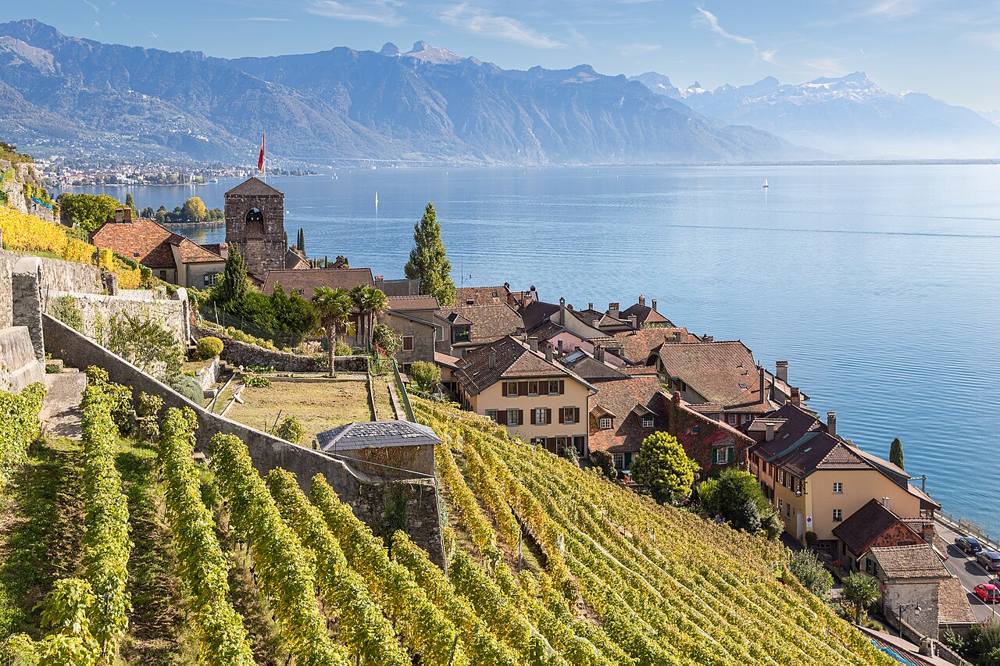
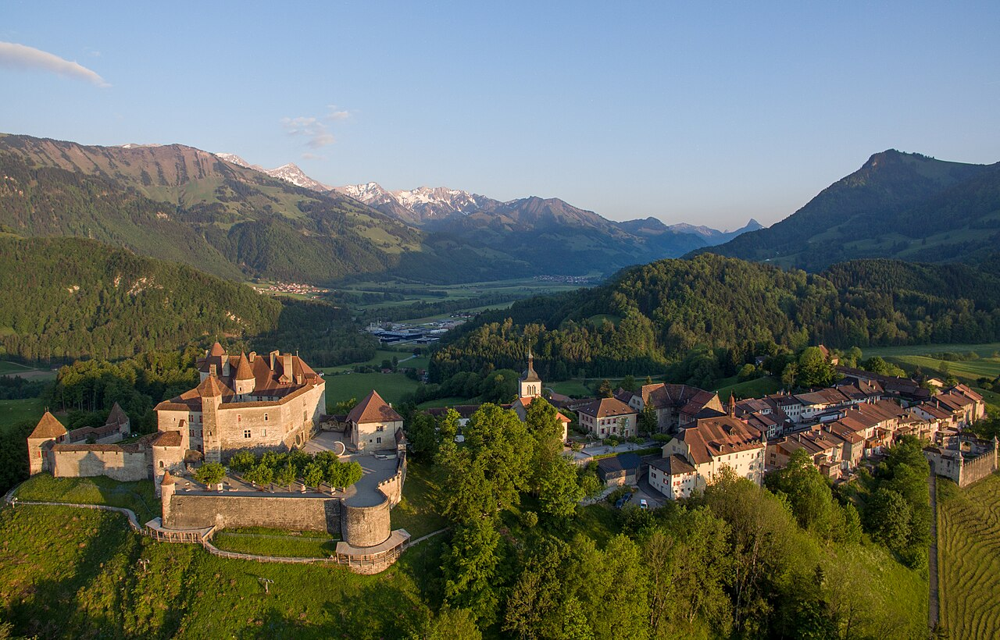
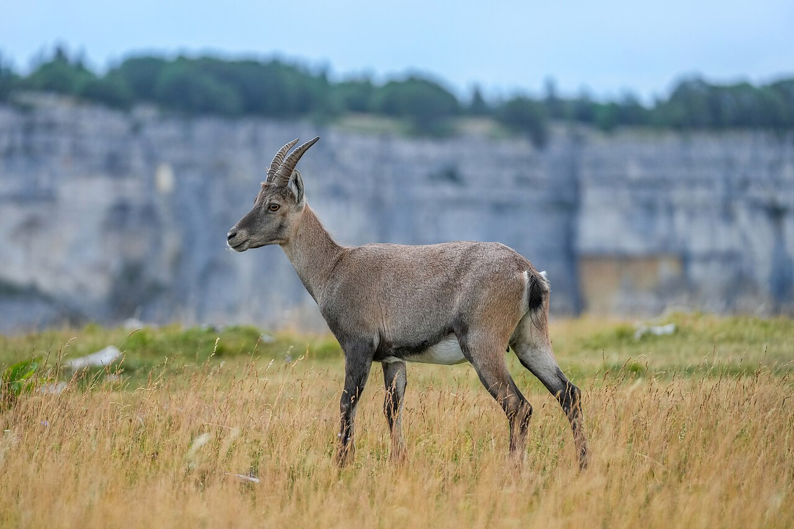
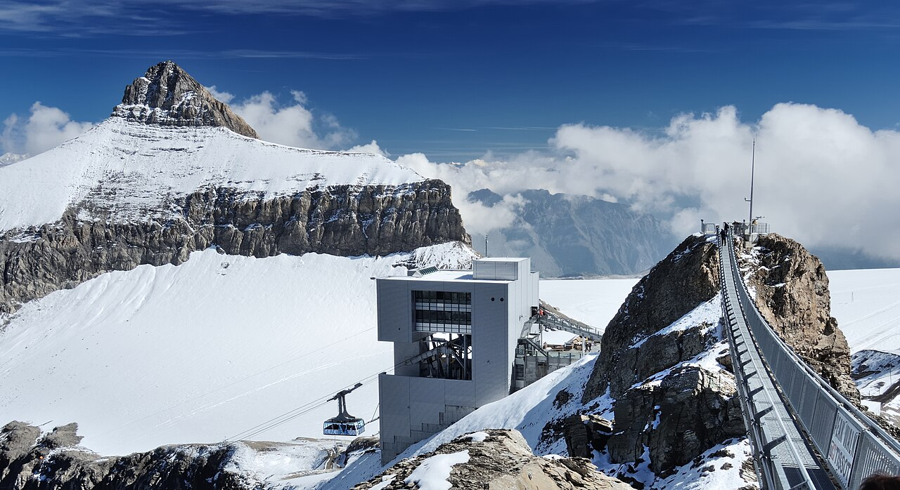
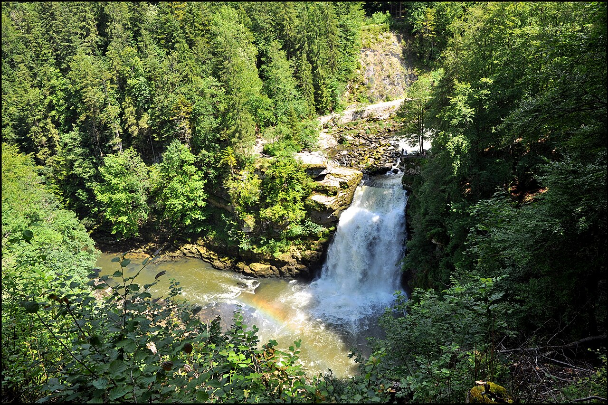

May
GreatNarcissus fields, mild and quiet. Rochers-de-Naye reopens on 22 May.
in Switzerland, per person≈ €1 370–2 230
All-in from €1 480 (Langenfeld) · €2 200 (Mexico City)

Wine terraces above a sea-like lake, a castle on the water, the home of Gruyère cheese and the Jura's hidden 'Grand Canyon' with wild ibex.
Low altitude, so it is great in May (wild narcissus fields above Montreux). Note: Rochers-de-Naye is closed until 21 May 2027.
July–August adds ≈ €90–160 per person in Switzerland (+7 %), mostly for beds, and the flights from Mexico City cost ≈ 30 % more. Passes, food and most lift tickets cost the same all summer.
Narcissus fields, mild and quiet. Rochers-de-Naye reopens on 22 May.
Warm, the vines are green, and the lake is swimmable by late June.
Swimming weather. Avoid Montreux during the Jazz Festival (2–17 July 2027).
Hot and lively. The Lavaux terraces and Jura lakes are great for a swim.
Keep 1–2 days flexible and save the big mountain days for clear weather.
Langenfeld → Basel → Lausanne → Montreux (≈ 6.5 h). Lakeside promenade at sunset. Friends from Mexico City: fly into Geneva. Montreux is ≈ 1 h 15 by direct train from the airport.
Train to Chexbres, walk down the terraces to St-Saphorin and Rivaz (≈ 2.5 h), taste wine at a caveau, and take a paddle steamer back.
Château de Chillon (50 % off with the Riviera Card), then the Rochers-de-Naye cog railway (from 22 May 2027) or the narcissus meadows above Montreux (mid-May).
Medieval Gruyères and its castle, the Maison du Gruyère dairy, the Cailler chocolate factory in Broc, and the Moléson summit.
Peak Walk, the suspension bridge between two summits (≈ CHF 85–89, 50 % with Half Fare). Or the car-free Lac de Taney above Vouvry.
Train to Neuchâtel: yellow-stone old town and lakeside.
Train to Noiraigue, climb the '14 hairpins' trail to the rim (≈ 2 h), lunch at the Ferme du Soliat, return via the Areuse gorge.
Train to Les Brenets, boat across the lake to the 27 m Doubs waterfall on the French border. Optional: the watchmaking towns of La Chaux-de-Fonds / Le Locle (UNESCO).
Neuchâtel → Basel → Köln (≈ 5 h). Friends: from Neuchâtel it is ≈ 1 h 15 back to Geneva airport.





With 5 people, a holiday apartment with a kitchen is almost always cheapest. Book with free cancellation now and re-check prices later.
The hostel sits right on the lake path to Chillon. In Neuchâtel use apartments.
≈ CHF 50–65 pp/nightAsk for the Montreux Riviera Card, which apartments and campsites issue too.
≈ CHF 85–110 pp/nightA historic grand hotel on the lake (or just drinks on its terrace).
≈ CHF 250+ ppLangenfeld → Köln → Basel → Lausanne/Montreux (≈ 6.5 h, 1–2 changes). Home from Neuchâtel via Basel.
Fly into Geneva. Montreux is ≈ 1 h 15 by direct train from the airport. From Neuchâtel it is ≈ 1 h 15 back to Geneva airport.
Half Fare Card (CHF 150) + tickets ≈ CHF 180 more. Add the free local cards: the Montreux Riviera Card (free regional transport, 50 % off Chillon, discounts on Rochers-de-Naye) and the Neuchâtel tourist card for overnight guests (check with your host).
CHF per person in May–June, sharing everything in Switzerland between 5. Only the trip there differs: the train from Langenfeld or the flights from Mexico City. 'Budget' = hostels/campsites and cooking. 'Comfort' = apartments/3★ hotels and more meals out.
| Item | Budget | Comfort |
|---|---|---|
| Half Fare + Swiss tickets | 330 | 380 |
| Lifts, castles, tastings | 120 | 220 |
| Accommodation (8 nights) | 440 | 760 |
| Food | 340 | 630 |
| Buffer | 50 | 90 |
| In Switzerland, everyone | 1 280 | 2 080 |
| Getting there and back | ||
| You two: train Langenfeld ⇄ Lake Geneva | 100 | 150 |
| Friends: flights Mexico City ⇄ GVA + airport train | 780 | 1 160 |
| Total from Langenfeld | 1 380 | 2 230 |
| Total from Mexico City | 2 060 | 3 240 |
€ at 1 CHF ≈ €1.07. 2026 prices; Swiss fares rise ≈ 3–4 % from Dec 2026. Flights are an estimate for economy with one stop, booked 3–6 months ahead. Splurges are listed separately.
Today is late October 2026. See the overview page for the full timeline.